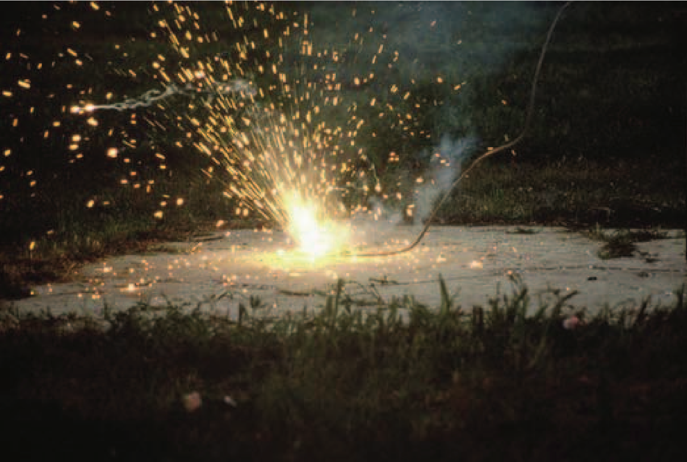
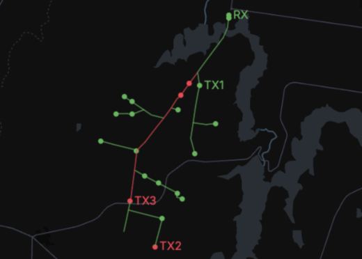
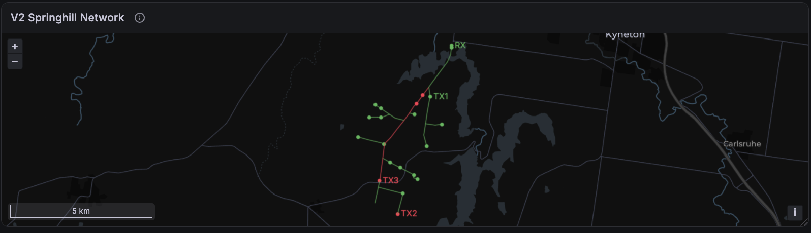

Today's alarm says that a SWER line broke. My dashboard shows where, as a section on a map.
Geospatial Situational Awareness for SWER Broken Conductor Detection · Capstone project, Victoria University
major powerline fires on Black Saturday 2009 started on SWER lines.

THE DANGER
MY DASHBOARDis all an electric arc from a fallen line can need to start a fire, under the wrong conditions.
So every minute spent searching for the break matters.
SWER (Single Wire Earth Return) lines carry power across long stretches of rural Australia, often through high fire-risk country. When one breaks and falls, it can arc and ignite dry grass.
kilometres of Australia's electricity network is SWER, mostly long rural lines.
is all an arc can need to ignite a bushfire, under the wrong conditions.
for an existing research system to detect a broken SWER line and trip it.
That ≠ where. Detection already works, but operators still see a list of devices. Crews may have to patrol kilometres of line to find the actual break.
Along each SWER line, transmitters (TX) send a signal back to a receiver (RX) at the start of the line. If the line breaks, every transmitter beyond the break goes silent.
Here TX2 and TX3 are silent but TX1 is still heard. One break on the stretch TX2 and TX3 share explains it, so only that stretch turns red.
If no single break fits the pattern, the dashboard says so instead of guessing.
A pipeline from the utility's own map files to a live map, tested on 12 real SWER networks in Victoria, each with 3 to 5 transmitters.
The starting point is the utility's KML map files for each network: poles, lines and devices.
KMLA parser pulls every pole, line and device out of each file and snaps each device onto its line.
PythonEach network is stored as a connected graph of poles and lines in a cloud database.
PostgreSQL on AWSFor any mix of Online and Offline transmitters, the database finds the stretch that explains it, and the dashboard paints it red.
GrafanaThe Springhill network with TX2 and TX3 Offline. The suspected section is red; everything still Online stays green.

Screenshot of my Grafana dashboard.
Demo video: changing transmitter status in the database and watching the dashboard update. Open on Loom.
All 12 networks, every possible transmitter status.
The same database and logic work for networks with 3, 4 or 5 transmitters.
Every Online/Offline mix gave the expected suspected section.
Every device sat within the 2 m limit of its line. Mapped paths matched the KML for all 12 networks.
The result is a section of line, not the exact pole. Pinpointing the break is the next step.
Operators need to see where, not just that.